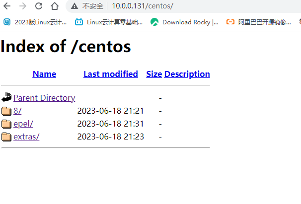

yum私有仓库
yum
yum服务器存放rpm包和相关包的元数据库
yum客户端访问yum服务器进行安装或查询
yum客户端配置 yum配置文件 [root@localhost ~]
yum仓库配置 1 2 3 4 5 6 7 8 9 10 11 12 13 14 15 16 17 18 19 20 21 22 23 24 25 26 27 28 29 30 31 32 33 34 35 36 37 38 39 40 41 42 43 44 45 46 47 48 49 50 [root@localhost ~]$releasever /Everything/$basearch $releasever /Everything/$basearch $releasever /Everything/$basearch $releasever /Everything/$basearch $releasever /extras/$basearch /os$releasever /extras/$basearch /os$releasever /extras/$basearch /os $releasever /extras/$basearch /os $releasever /PowerTools/$basearch /os/$releasever /PowerTools/$basearch /os/$releasever /PowerTools/$basearch /os/$releasever /PowerTools/$basearch /os/
yum仓库服务器配置 安装apache服务 1 2 3 4 5 6 7 8 9 10 11 12 [root@localhost ~]
启动apache服务 1 2 3 [root@localhost ~]
在apache目录下创建文件夹，挂载光盘，复制光盘文件到apache目录下 1 2 3 4 5 6 7 [root@localhost ~]mkdir : created directory '/var/www/html/centos' mkdir : created directory '/var/www/html/centos/8'
1 2 3 4 5 6 7 8 [root@localhost ~]id repo name
1 2 3 4 5 [root@localhost ~]
下载阿里云的epel源，制作私有yum源 1 2 3 4 5 [root@localhost ~]
关闭防火墙 #关闭SELinux 1 2 3 4 5 6 7 8 9 10 11 12 13 14 15 [root@localhost ~]
#关闭防火墙 浏览器访问服务器ip 